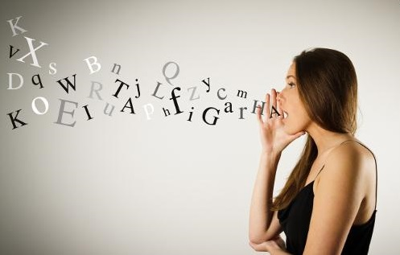

- 

Apelul la măgulire(linguşire) conduce la situaţia în care, dacă lăudăm, măgulim o persoană ce dorim să ne accepte opinia, atunci acea persoană, copleşită de cuvintele „calde” la adresa sa, va accepta opinia noastră.
Apelul la dragoste şi apelul la încredere se referă la situaţia când o persoană cere aprobarea unei opinii sau acţiuni pe temeiul dragostei sau încrederii: „Dacă ai încredere în mine, vei merge cu mine până la capăt!” „Dacă mă iubeşti, mă vei urma”. Aceste ultime două sofisme poartă numele generic de apel la prietenie (argumentum ad amicitiam).
Apelul la mândrie sau loialitate. Exemplu: „Dacă eşti într-adevăr mândru de ţara ta şi o vrei prosperă, atunci vei cumpăra obligaţiuni de economii”.
Apelul la experienţă este utilizat de obicei împotriva opiniilor persoanelor mai tinere, lipsite de aşa-numita experienţă; astfel, o opinie este „validată” dacă trece filtrul experienţei unei persoane care pretinde că deţine experienţă. Sofismul devine şi mai evident când persoana respectivă invocă experienţa şi în domenii în care nu este competentă (a se vedea şi argumentul autorităţii).
Apelul la sinceritate apare în discurs prin sublinieri repetate a credinţei într-o idee, alături de un ton pe măsură (atunci când discursul este oral): „Doamnelor şi domnilor, cred cu tărie că această propunere este necesară. Absolut necesară. Realmente cred asta!”. Se vorbeşte tot mai des despre argumentarea falacioasă bazată pe emotivitate.
Astfel, pe lângă erorile de mai sus, mai putem vorbi şi despre altele:
Argumentul din invidie sau din gelozie apare atunci când respingem opiniile cuiva pe temeiul unuia dintre cele două sentimente. În enunţul „Are el o grămadă de bani, dar spune numai prostii şi nu are nici maniere”, este trădată invidia pentru bogăţia celui criticat. Gândirea deziderativă presupune a accepta o opinie doar pentru motivul că ne-ar plăcea ca ea să fie adevărată. De pildă, accept opinia că Dumnezeu şi viaţa de după moarte există pentru motivul că aş dori ca viaţa mea să nu se termine odată cu existenţa fizică.
Confuzia toţi/unii. Apare când aceşti cuantori lipsesc, iar contextul nu lămureşte clar care este intenţia. De pildă, propoziţia „Pisicile au coadă” poate să însemne „Toate pisicile au coadă” (şi ar fi falsă, căci există pisici care nu au coadă – pisicile Manx), dar şi „Majoritatea pisicilor au coadă” sau „Unele pisici au coadă” (şi ar fi adevărată);
Vaguitatea se referă la lipsa clarităţii unor termeni sau enunţuri întregi şi nu este o formă de ambiguitate29. De exemplu, un personaj public acuzat că consumă alcool în fiecare zi ar putea răspunde că nu bea decât din „când în când” sau „ocazional”, însă ocazional poate însemna de fiecare dată când se întâlneşte cu prietenii, ceea ce se poate întâmpla şi în fiecare zi;
Eufemismul. Utilizarea eufemismului pentru a convinge apare deseori în argumentare, prin ascunderea unor termeni precişi referitori la anumite obiecte, personaje, instituţii etc. De pildă, pentru „autoturism folosit” se poate spune „autoturism pe care l-a deţinut cineva”, pentru „Ministerul de Război” s-a venit cu denumirea „Ministerul Apărării”, pentru „rebeli”, cu „luptători pentru libertate”. Mai nou, se discută şi despre disfemism (engl. dysphemism), folosit pentru a produce un efect negativ auditoriului. Prin urmare, dacă termenul „luptători pentru libertate” este un eufemism pentru „luptători de gherilă” sau „rebeli”, termenul „terorişti” ar fi disfemismul;
Cuvintele „nevăstuică” sunt expresii sau termeni utilizaţi pentru „a planta” o convingere, pentru a sugera ceva. În enunţul „Trei din patru stomatologi chestionaţi recomandă pacienţilor gumă de mestecat fără zahăr”. Nevăstuica aici este cuvântul „chestionaţi”, întrucât nu se precizează criteriul după care au fost selecţionaţi stomatologii chestionaţi. Pentru a induce convingeri sau pentru a insinua anumite opinii se mai folosesc de obicei şi expresii nevăstuică precum: „este posibil”, „s-ar putea”, „unii spun” etc.;
Dovezile surogat sunt expresii ce desemnează false evidenţe sau false autorităţi precum: „Studiile arată că...”, „Este evident faptul că...”. Din enunţul „Surse informate spun că preşedintele nu este de acord cu noua lege asupra împrumutului bancar”, nu reiese deloc care sunt sursele, cum ştim dacă ele sunt informate etc.